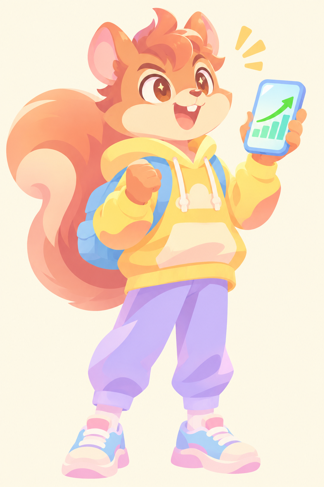
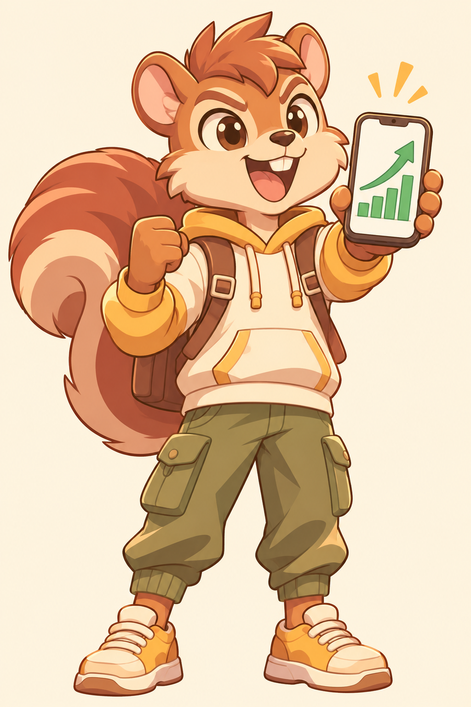
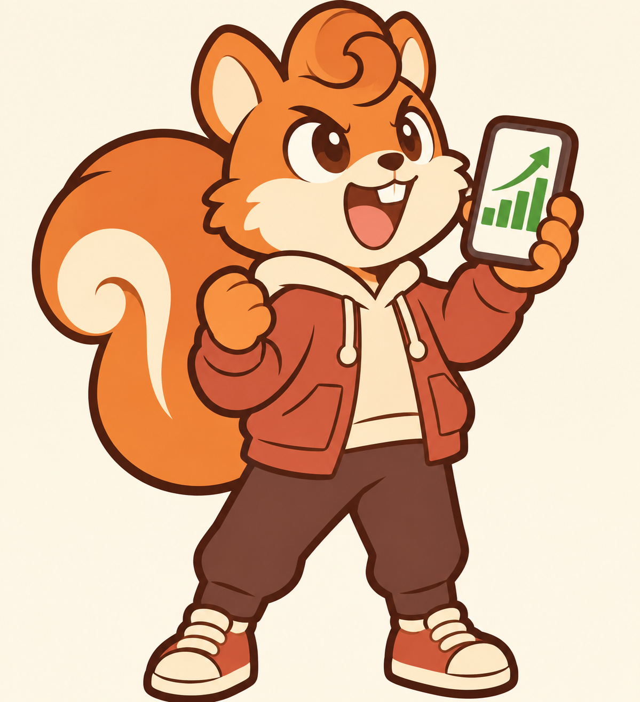
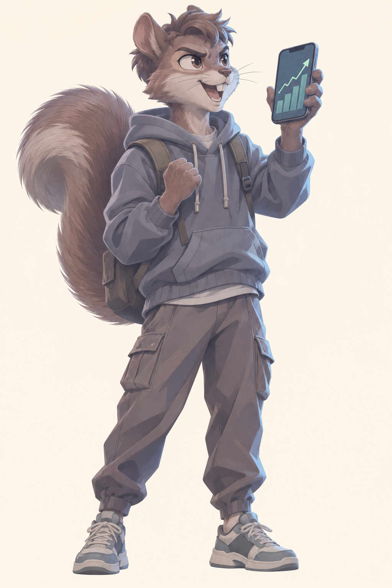

파스텔 소프트 셀 그림체 변형 4종
기반은 D(파스텔 소프트 셀)로 고정하고, 선·그림자·채도·무게감만 바꿨습니다. 캐릭터는 같은 옷과 포즈입니다.

외곽선 없이 색 블록만으로 형태를 만듦. 가장 밝고 가벼움.

갈색 얇은 선과 3톤 셀 그림자. 일러스트 느낌이 살아 있음.

바깥 외곽선만 굵게, 내부 그림자는 최소. 포스터 같은 힘.

채도를 낮추고 차가운 도시 빛. 덜 귀엽고 더 무거움.
고르실 때 볼 점: 빚과 파산의 무게를 담는지 (P4 쪽), 귀여움과 밝음을 유지하는지 (P1 쪽), 방치형 화면 위에서 읽히는지.
하나 고르면 그 변형을 스타일 고정문으로 동결하고 표정 5종을 뽑겠습니다.